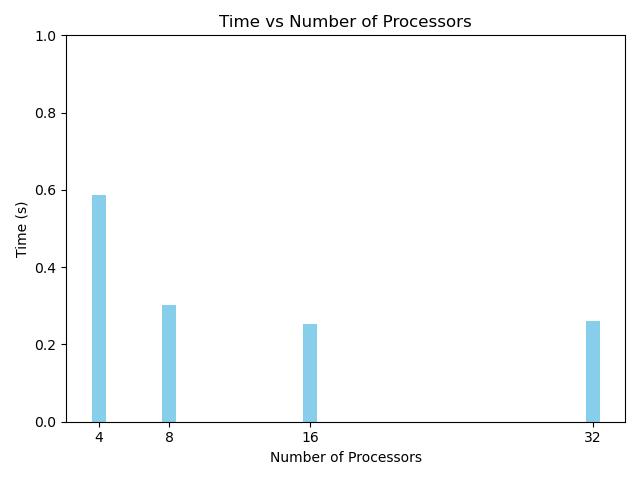

Example: Calculation of pi
So far only simple examples were shown to introduce few of the basic concepts. In this example, a real world example is shown on how MPI parallelism can help speed up the code.
from mpi4py import MPI
import time
import math
t0 = time.time()
comm = MPI.COMM_WORLD
rank = comm.Get_rank()
nprocs = comm.Get_size()
# number of integration steps
nsteps = 10000000
# step size
dx = 1.0 / nsteps
if rank == 0:
# determine the size of each sub-task
ave, res = divmod(nsteps, nprocs)
counts = [ave + 1 if p < res else ave for p in range(nprocs)]
print(counts)
# determine the starting and ending indices of each sub-task
starts = [sum(counts[:p]) for p in range(nprocs)]
ends = [sum(counts[:p+1]) for p in range(nprocs)]
# save the starting and ending indices in data
data = [(starts[p], ends[p]) for p in range(nprocs)]
else:
data = None
data = comm.scatter(data, root=0)
# compute partial contribution to pi on each process
partial_pi = 0.0
print(data[0],data[1])
for i in range(data[0], data[1]):
x = (i + 0.5) * dx
partial_pi += 4.0 / (1.0 + x * x)
partial_pi *= dx
partial_pi = comm.gather(partial_pi, root=0)
if rank == 0:
print('pi computed in {:.3f} sec'.format(time.time() - t0))
print('error is {}'.format(abs(sum(partial_pi) - math.pi)))
In the above code, t0 is set to calculate time, comm is set for the communicator, rank is set to be the rank in the communicator and size is set to be the size of communicator.
Integration steps assigned are 10,000,000 and correspondingly the step size dx.
Now, if the rank is the first rank in MPI process, then ave and res are set using divmod, which takes two numbers as arguments and returns their quotient and remainder in a tuple.
Next a list counts is created which iterates over processes p in range nprocs.
For each value of p, the value in counts is assigned. This value is essentially the number of domains that the calculation occurs.
On running the job, on say, 4 processors (--ntasks-per-node flag), the counts can be seen as,
[2500000, 2500000, 2500000, 2500000]
The next step is to scatter the data from rank 0 to other ranks.
data = comm.scatter(data, root=0)
a partial_pi variable is then calculated using the discrete steps as follows
print(data[0], data[1])
for i in range(data[0], data[1]):
x = (i+0.5)*dx
partial_pi += 4.0 / (1.0 + x*x)
partial_pi *= dx
partial_pi = comm.gather(partial_pi, root=0)
At the start and end of the data range on each rank is printed. For values (i) in the range of data, x is calculated to be i+0.5 multiplied by dx, which was computed earlier.
partial_pi is then increased each step. Finally partial_pi after the loop completes is multiplied by dx and then the communicators gathers all of the values of partial_pi back to rank 0, which is the root process.
The final bit, calculates the error and time to perform the operation.
The image above shows the time to calculate this value with the help of [4,8,16,32] processors. As can be seen, that the best result is observed from scaling 4 to 8 processors. And then on, the returns diminish.